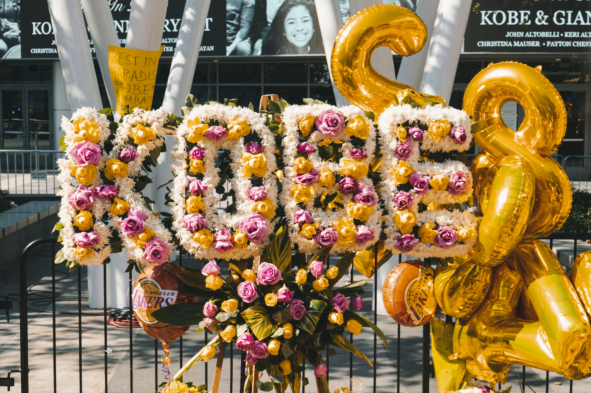

R.I.P. MAMBA
DURATION OF PROJECT COMPLETION: 2/7/20 - 2/14/20
The inspiration behind this project was to give myself a outlet to heal. It is a dedication to Kobe Bryant and his 13 year old daughter, Gianna. The only way I know how to truly express myself, is through creating. This project was very difficult to work on. Kobe has been one of my greatest inspirations since I was a young child. He always gave 2000% in everything he did and for that reason, I gravitated towards his unique drive. He is bigger than basketball and his loss was felt across the nation. I created a story line for this piece by stating that Kobe founded this art school in 2018; his retirement year. Someone looking at the site will see the updated memorial area for him and Gianna at the bottom of the home page.